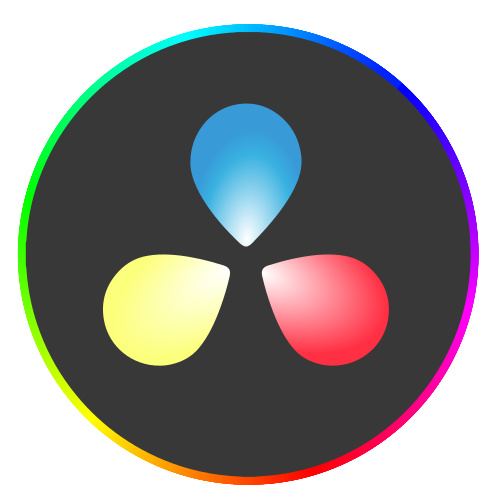

00
START
✓
Open Sourced Today
HTML.
Agentic video toolchain
made with HyperFrames itself ✓
01
Problem
✓
The Problem
Every video tool is built for humans.
JSON and XML timelines. Layers. Keyframes. Years of muscle memory.
After Effects

DaVinci Resolve
Premiere
<div>
<p>
<span>
<a>
<img>
<ul>
<h1>
<br>
<li>
<svg>
<form>
<nav>
<hr>
<b>
02
Insight
✓
The Insight
Agents already speak the web.
Billions of HTML pages. Millions of CSS and JS animations. Hundreds of thousands of GSAP snippets.
BILLIONS
of pages in their training data
03
How
✓
The How
Three data-attributes.
index.html — HyperFrames
1
<
div
data-start
=
"0"
>
2
<
div
data-duration
=
"5"
>
3
data-track-index
=
"1"
→
▶
MP4
▶
MOV
▶
WEBM
04
Magic
✓
The Magic
Anything browser-native works.
?
CSS anim
?
GSAP
?
Lottie
?
Three.js
?
D3
?
Aa
Google Fonts
05
Catalyst
✓
The Catalyst
The moment everything changed.
QUALITY: NOT RELIABLE
November
2025
Gemini 3
Opus 4.5
✓
Motion graphics
✓
Multi-scene B-rolls
06
Try It
✓
Open Source
Apache 2.0. Try it now.
~/agent — zsh
$
npx skills add
heygen-com/hyperframes
✓ skill installed. agent is now a video editor.
Which one are you
shipping with?
HyperFrames
Remotion
Motion Canvas
↓
Comment your pick
AI AGENTS
✓
WRITE.
✓
TALK.
✓
CODE.
✓
AUTONOMOUSLY.
BUT NOT
VIDEO.
Until this week.
Editing video.
HyperFrames